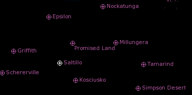

The number of drops in the primary "Assault" phase is determined by the number of planets in the sector
being contested, and the success of each contestant in the battle. As the Assault phase models the
march of the attacker towards the sector capital, this phase is considered to be fought on each
non-capital ("member") planet in the sector, in sequence. In order to proceed to the Siege phase, the attacker
must "capture-and-hold" the majority of member planets in the sector, at which time the assault moves
to the Siege phase. If the attacker fails to capture-and-hold a majority of member planets in the
sector, they are repelled from the sector and the defender is considered victorious in the Sector
Assault, and retains control.
As part of launching the battle, the Attacker will have chosen the order in which the member planets
will be contested; this models the "due diligence" the attacker would have exercised in preparing for
the battle (as it is expected they would have tailored their forces and strategy to the terrain
classes of the member planets in the sector). The actual maps to be played are chosen from the list of
maps associated with the particular terrain classes of the planets when the drops for those planets
are generated.
The "capture-and-hold" mechanic is implemented as follows:
- When the battle moves to Member Planet "A", a single drop is played for the "capture" of the
planet by the attacker.
- If the attacker wins the "capture" drop, they must immediately "hold" the planet by defending
it from counter-attack by the defender (the roles are reversed for this drop, and the attacker
becomes the defender and the defender becomes the attacker, for that drop).
- If the defender wins the "hold" drop for the planet, they are considered to regain control of
the planet and the planet is no longer "in play" for the rest of the Assault phase of the battle.
- If the attacker wins the "hold" drop for the planet, they are considered to maintain control
of the planet and the planet is no longer "in play" for the remainder of the Assault phase
of the battle.
- Regardless, when the "hold" drop has ended, if the Assault phase continues, then the next
drop will be a "capture" drop for the next planet in the list.
- If, however, the attacker loses the "capture" drop, the defender maintains control of the
planet and the planet is no longer "in play" for the remainder of the Assault phase
of the battle.
- If, at any time during the Assault phase, the defender has maintained control of a majority
of contested member planets, the attacker is considered to have failed and the defender is
considered victorious in the battle.
We will use the starmap image below to illustrate the Assault phase.

In this example sector, there are ten planets, one of which is the sector capital (Saltillo). Therefore,
in order to proceed to the Siege phase, the attacker will need to capture, and hold, 5 of the 9
member planets in the sector. In this case, the minimum number of drops in the assault could be 5 --
if the defender wins all of the Assault drops, the battle is over. The maximum number of drops in
this Assault phase could be 18 -- assuming the attacker captured 9, held 4 and failed to hold 4, and
the final "hold" drop (the 18th drop in the Assault phase) is to determine whether or not the assault
is over, or moves onto Siege phase.
For example, lets say that the attacker chose the following order in which to play the Assault phase:
- Tamarind
- Millungera
- Schererville
- Simpson Desert
- Promised Land
- Nockatunga
- Kosciusko
- Griffith
- Epsilon
The first drop of the Sector Assault will be a "capture" drop for Tamarind, and the conditions for this
drop will be included in the forcedec generated and email to the teams involved.
Since it is unknown whether or not the next drop will be a "hold" or the next "capture", conditions
for subsequent drops cannot be generated until this first drop is complete. This is true of all
drops in the Assault phase; the tracker can only generate drop conditions once the current drop
is completed (and logged, which makes it vital that teams log each drop as the battle is played).
Lets say that the attacker won the Tamarind "capture" drop; the tracker will generate the map,
tonnage/BV and conditions for the "hold" drop on Tamarind; the attacker will now play the role
of defender, and the defender will play the role of attacker, for this drop only.
Assume that the attacker wins the hold drop -- for the duration of this Assault phase, the planet
Tamarind is under their control, and they need only to capture and hold 4 more planets in the sector.
Even if the attacker lost the hold drop (and the defender maintains control of Tamarind for the
duration of this Assault phase), the tracker will move the battle to the next planet, Millungera,
for the "capture" drop, and the attacker and defender return to their original roles.
Lets say that the attacker loses the Millungera "capture" drop; the defender retains control of
Millungera and the attacker cannot try to attack it again this Assault phase. The attacker does,
however, need to capture and hold only 4 of the remaining 7 planets "in play" in the sector for this
Assault phase, if they wish to move the assault to Siege.
Finally, lets say that the attacker captured and held Schererville and Simpson Desert, failed to
capture and/or hold Promised Land and Nockatunga, and then captured and held Kosciusko and Griffith.
The Sector Assault then moves immediate to the Siege phase.